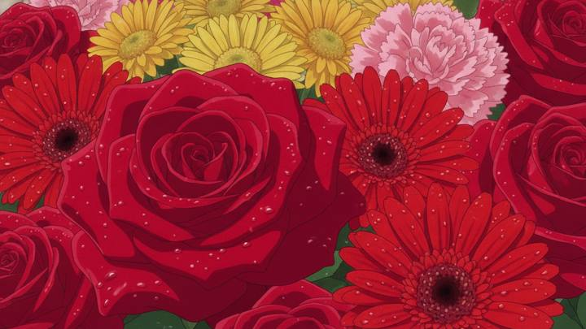
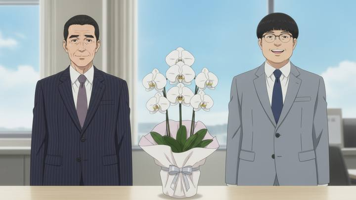
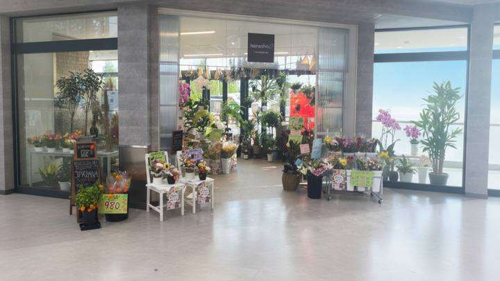
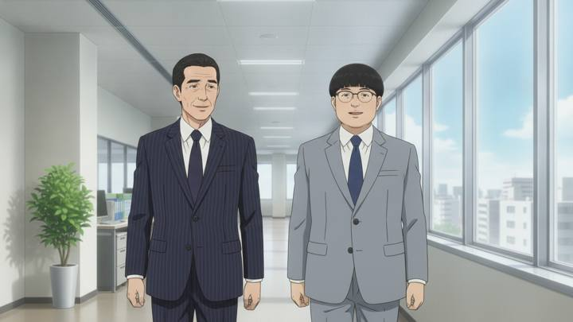
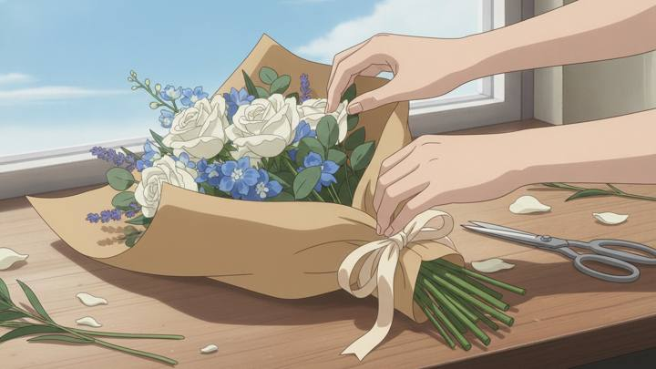

これは「大体こういうイメージです」という段階のものです。静止画に微ズームをかけて構成とテンポを確認するために作りました。品質はここからまだ上げられます。
本番は各カットを Lovart で動画化し、登場人物の口も動かします。まだ5カットが実写のままで、アニメと混在して見えます（下記「未確定・積み残し」参照）。
静止画＋微ズーム＋テロップのみ。音声・BGMなし。本番はLovartで各カットを動画化します。



| A案（採用） 結果→問い→店名 | B案 悩み3連 | C案 花のシズル一点突破 | |
|---|---|---|---|
| 3人が出るまで | 4.5秒 | 4.5秒 | 20秒以降 |
| 店名が出るまで | 6秒 | 6秒 | 40秒（最後だけ） |
| 根拠 | 花キューピット176万・ビジネスフラワー83.7万がこの型 | 勝ち動画の入口と逆 | 花キューピット38秒170万がこの型 |
| 集客との相性 | ◎ 店名の想起が早い | ○ | △ 想起が最後だけ |
| 「3人必ず出す」との両立 | ◎ 冒頭で全員 | ◎ | ✕ 人物が後ろに寄る |
C案は数字としては最強ですが、大岩様のご要望である「3人を出す」と両立しません。B案は悩みから入る型で、勝ち動画と逆向きです。
| # | 尺 | 映像 | セリフ | テロップ |
|---|---|---|---|---|
| S01 | 1.2s | 花のドアップ① | — | — |
| S02 | 1.8s | 女性花束を抱えて微笑む | — | 贈りもの、どこで買う？ |
| S03 | 1.5s | 上司部下胡蝶蘭を前に | — | （継続） |
| S04 | 1.5s | 店頭外観 | — | 花庄 ロピアモール滝ノ水店 |
| S05 | 2.0s | 花売場をパン | — | ——そうだ、花にしよう。 |
| S06 | 3.0s | 女性スタッフに相談 | 「母に贈りたくて」／「お任せください」 | 誰に、どんな日に。おまかせください。 |
| S07 | 1.5s | 花のドアップ② | — | 誕生日／母の日／記念日 |
| S08 | 1.5s | はさみで茎を切る手元 | — | 昭和53年創業。目利きが選ぶ、旬の花。 |
| S09 | 1.5s | ラッピングの手元 | — | （継続） |
| S10 | 4.0s | 女性母に花束を渡す（最大の見せ場） | 母「まあ、ありがとう」 | “ありがとう”は、花がいちばん伝わる。 |
| S11 | 3.5s | 上司部下オフィスの廊下 | 上司「先日の開店祝い、うちから贈った胡蝶蘭 好評だったよ」 | お取引先へ贈るなら。 |
| S12 | 2.0s | 部下笑顔で答える | 部下「花庄さんです」 | — |
| S13 | 2.0s | 胡蝶蘭売り場をパン | — | 3本立ちの大輪／ラッピング込み／立て札 無料 |
| S14 | 2.5s | 上司部下受付カウンター越しに納品 | 受付「ありがとうございます」 | 贈った人の顔まで、立てる。 |
| S15 | 2.5s | スタンド花8基（立て札なし） | 店主「ありがとうございます！」 | 開店祝いのスタンド花も、おまかせ。 |
| S16 | 2.0s | 卸の物量 | — | メインは、卸売。 |
| S17 | 2.0s | 配送車が連なる車庫 | — | 愛知県内 約70店舗へ、自社便で。 |
| S18 | 1.5s | 数字の締め | — | 昭和53年創業／約70店舗／自社便21台 |
| S19 | 1.5s | 荷下ろし・スタッフ | スタッフ「はい、お願いします！」 | スタッフ募集中／販売・配送 |
| S20 | 3.5s | エンドカード | — | 店舗情報＋QR＋検索「花庄 滝ノ水」 |
| 役 | 登場カット | 回数 |
|---|---|---|
| 主人公の女性（淡いレモンイエローのシャツ・赤NG） | S02（冒頭）／S06／S10 | 3回 |
| 上司（短く整えた黒髪） | S03（冒頭）／S11／S14 | 3回 |
| 部下（眼鏡あり） | S03（冒頭）／S12／S14 | 3回 |


YouTube を44クエリ（日本語24／英語20）× 各40件で横断し、重複除去後 548本が対象範囲に入りました。そこから業態が直接一致する28本に絞り、全件を yt-dlp で個別に再取得して2026-08-06時点の生存・再生回数・尺を実測しています。推定値や記事の孫引きは使っていません。
そのうえで、視聴者は日本人のみという前提で日本の広告・日本のSNS縦型に絞り込み、上位を ffmpeg でカット点検出＋1fpsコンタクトシート化して秒単位で分解しました。
| 動画 | 尺 | 再生 | そこから採ったもの |
|---|---|---|---|
| もらう人も、あげる人もうれしい｜花キューピット | 30秒 | 176万 | 冒頭を「結果」から始める |
| 胡蝶蘭編｜ビジネスフラワー® | 30秒 | 83.7万 | 法人パートを「褒められた場面」から。条件をテロップで畳みかける |
| 花の力で、あの人も地球も笑顔に｜花キューピット | 38秒 | 170万 | 花と手元の比率（74%）。締めは指名検索＋店舗誘導 |
| 昼12時までの注文なら当日お届け｜花キューピット | 30秒 | 99.4万 | 用途の列挙 |
| 【母の日】代わりの手 篇｜花キューピット | 20秒 | 96.2万 | カット3つでも成立する。これはVeo生成のAI動画 |
| 青山フラワーマーケット TikTok 最高位 | 24秒 | 70.7万 | イベント名指し（卒業式・母の日）が強い |
| 項目 | 内容 | 費用 |
|---|---|---|
| 追加の種画像 | 8枚（S01・S02・S03・S07・S09・S10・S11・S12） Gemini 2.5 Flash Image ＠¥6/枚 | ¥48 |
| 既存素材の流用 | 11枚（v6で生成済み） | — |
| 動画化 | 20カット。Lovart（契約済み・月額内） | 追加なし |
| 音声（TTS） | セリフ7本 | 数十円 |
| 合計 | 実費のみ。API費用は 経理/API費用記録/2026-08.csv に記録済み | 約¥100以内 |
ゼロです。納品後の配信費（YouTube広告／Meta広告等）は、出稿する場合のみ別途発生します。現時点で出稿の予定・見積もりはありません。
① 大岩様の再承認が必要な変更が3点あります
8/4に「②構成はいいと思います」とご承認をいただいているため、以下は再承認が要ります。
・冒頭を「悩み」から「結果＋店名」に変更（S01〜S04を新設）
・法人パートの入口を「褒められた場面」に変更（S11・S12）
・法人パートに条件テロップを追加（S13：3本立ちの大輪／ラッピング込み／立て札 無料）